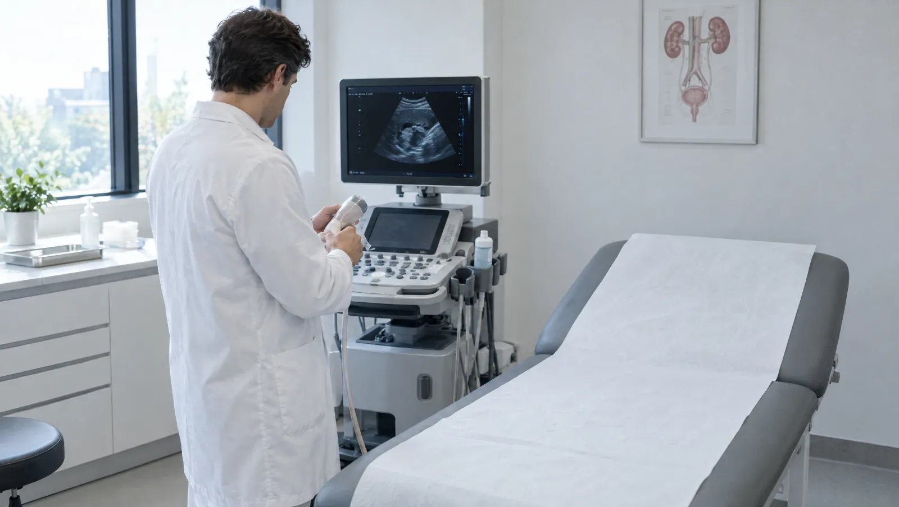

Üroloji hangi organlarla ilgilenir?
Üroloji, idrarın üretildiği ve dışarı atıldığı tüm sistemle ilgilenir: böbrekler, idrar kanalları, mesane ve idrar yolu. Erkeklerde prostat, testisler ve cinsel sağlık da bu bölüme girer. Kadınlarda sık başvuru nedenleri tekrarlayan idrar yolu enfeksiyonu ve idrar kaçırmadır. Taş, tümör ya da darlık gibi yapısal sorunlarda tedaviyi ürolog planlar.
Pek çok kişi ürolojik şikâyetini utandığı için erteler. Oysa gece sık tuvalete kalkmak, idrarda yanma ya da kan görmek erken bakılması gereken işaretlerdir. İdrar tahlili ve üriner sistem ultrasonu değerlendirmenin temelini oluşturur. Erkeklerde PSA kan testi prostat hakkında ek bilgi verir. Ürolog bu sonuçlara göre sizinle ilaçla izlem, ileri görüntüleme ya da cerrahi seçeneklerini konuşur.

Ürolog muayenesi gerektiren belirtiler
- İdrar yaparken yanma, sızı ya da sık sık tuvalete gitme isteği
- İdrarda kan, belirgin renk değişikliği ya da köpüklenme
- Böğürden kasığa doğru vuran, dalgalar halinde gelen ağrı
- Gece iki ve daha fazla kez idrara kalkmak
- İdrar akışında zayıflama, kesik kesik idrar yapma
- Öksürürken, gülerken ya da aniden gelen sıkışmayla idrar kaçırma
- Testiste şişlik, ele gelen sertlik ya da ağrı
- 50 yaş sonrası prostat kontrolü; ailede prostat kanseri varsa daha erken
Acil durumda beklemeyin
İdrarınızı hiç yapamıyorsanız, böbrek ağrısına yüksek ateş ve titreme eşlik ediyorsa ya da testiste aniden şiddetli ağrı başladıysa hemen harekete geçin. Testis ağrısında saatler önemlidir. 112'yi arayın ya da 7/24 açık acil servisimize gelin.
Ürolojide sık karşılaştığımız sorunlar
- Böbrek ve üreter taşları
- İyi huylu prostat büyümesi
- Prostat iltihabı (prostatit)
- Tekrarlayan idrar yolu enfeksiyonları
- Kadınlarda stres ve sıkışma tipi idrar kaçırma
- Aşırı aktif mesane
- Varikosel
- Hidrosel
- Sertleşme sorunu (erektil disfonksiyon)
- Böbrek kistleri
- Prostat, mesane ve böbrek tümörlerinde tanı ve izlem
Ürolojik tanının adımları
Tam idrar tahlili ve idrar kültürü
İdrarda kan, iltihap hücresi ve bakteri olup olmadığını gösterir. Kültür ise enfeksiyona yol açan mikrobu ve ona etki eden antibiyotikleri belirler.
- Süre
- Kültür sonucu genellikle 2-3 gün sürer
- Hazırlık
- Genital bölgeyi yıkayın, sabah idrarının orta kısmını steril kaba verin
Üriner sistem ultrasonu
Böbrekleri, mesaneyi ve erkeklerde prostatı görüntüler. Taşı, kisti ve idrar yaptıktan sonra mesanede kalan idrar miktarını gösterir.
- Süre
- 15-20 dakika
- Hazırlık
- Mesaneniz dolu olsun; çekimden 1 saat önce 4-5 bardak su için
PSA testi
Prostatın ürettiği bir proteinin kandaki düzeyini ölçer. Sonucu ürolog yaşınız, prostat boyutunuz ve muayene bulgularıyla birlikte yorumlar.
- Hazırlık
- Testten önceki 48 saat cinsel ilişki ve bisiklet sürmekten kaçının
Üroflowmetri
Ölçüm yapan özel bir tuvalete idrarınızı yaparsınız. Cihaz akış hızını ve hacmi kaydeder; prostat büyümesi ya da darlıkta akışın ne kadar zayıfladığını gösterir.
- Süre
- Yaklaşık 10 dakika
- Hazırlık
- Mesaneniz dolu gelin ama aşırı sıkışmış olmayın
Böbrek taşı tomografisi
Taşın boyutunu, yerini ve yoğunluğunu ayrıntılı gösterir. Taş ağrısıyla acile gelen hastalarda da sık başvurulan bir incelemedir.
- Süre
- Çekim birkaç dakika
- Hazırlık
- İlaçsız çekimde hazırlık gerekmez
Sistoskopi
İdrar yolundan ilerletilen ince bir kamerayla mesanenin içi doğrudan görülür. Nedeni bulunamayan idrarda kanamada ve mesane tümörü takibinde kullanılır.
- Süre
- 15-20 dakika
Muayeneyi verimli kılacak birkaç hazırlık
- Gelmeden önceki 2-3 gün kaç kez idrara çıktığınızı ve ne kadar sıvı içtiğinizi yazın
- Daha önce taş düşürdüyseniz taşı ya da taş analizi sonucunu getirin
- Önceki ultrason, tomografi ve PSA sonuçlarınızı yanınıza alın
- Hekim idrar tahlili isteyebilir; bu yüzden muayeneden hemen önce tuvalete girmeyin
- Kan sulandırıcı ya da prostat ilacı kullanıyorsanız adını ve dozunu not edin
Üroloji hekimleri

Ürolojiye dair merak edilenler
Böbrek taşım kendiliğinden düşer mi?
Küçük taşların bir kısmı bol sıvı alımı ve takiple kendiliğinden düşebilir. Bunu taşın boyutu, bulunduğu yer ve idrar akışını engelleyip engellemediği belirler. Öte yandan büyük ya da tıkanıklık yapan bir taşla uzun süre beklemek böbreğe zarar verebilir. Ateş eşlik ediyorsa durum aciliyet kazanır. Uygun yolu, görüntüleme sonuçlarına bakarak ürolog belirler.
PSA değerim yüksek çıktı, bu kanser olduğum anlamına mı gelir?
Her yüksek PSA kanser demek değildir. Prostat büyümesi, prostat iltihabı, yakın zamanda yapılan bisiklet sürüşü ya da cinsel ilişki de değeri yükseltebilir. Ürolog muayene bulgularına ve PSA'nın zaman içindeki değişimine bakar, gerekirse ölçümü tekrarlatır. İleri inceleme gerekip gerekmediğini bu bilgilerin tamamı belirler.
Prostat muayenesi nasıl yapılır?
Ürolog eldivenli parmağıyla makattan prostatı yoklar. Muayene birkaç saniye sürer ve hafif bir baskı hissi verebilir. Bu sırada hekim prostatın büyüklüğünü, kıvamını ve yüzeyini değerlendirir. Ultrason ve PSA bu muayenenin yerini tutmaz, onu tamamlar.
İdrar kaçırma yaşlanmanın kaçınılmaz bir sonucu mu?
Sık görülür ama kaçınılmaz değildir. Doğumlar, menopoz, prostat ameliyatları ve bazı ilaçlar idrar kaçırmayı tetikleyebilir. Kaçırmanın tipini belirlemek tedavi yolunu değiştirir. Örneğin öksürürken kaçırmada pelvik taban egzersizleri, ani sıkışmada mesane eğitimi öne çıkabilir. Bir hafta boyunca tutacağınız işeme günlüğü bu ayrımı kolaylaştırır. Pek çok kişi bu sorunla yıllarca sessizce yaşar; oysa yardım istemek için geç değildir.
Kadınlar da ürologa başvurabilir mi?
Elbette. Tekrarlayan idrar yolu enfeksiyonu, idrar kaçırma, böbrek taşı ve idrarda kan kadınlarda da ürolojinin konusudur. Gebelik ve rahimle ilgili sorunlar ise kadın doğum bölümünde değerlendirilir.
Bu sayfayı Op. Dr. Levent Yazıcı gözden geçirdi. Son güncelleme: 7 Ekim 2026.